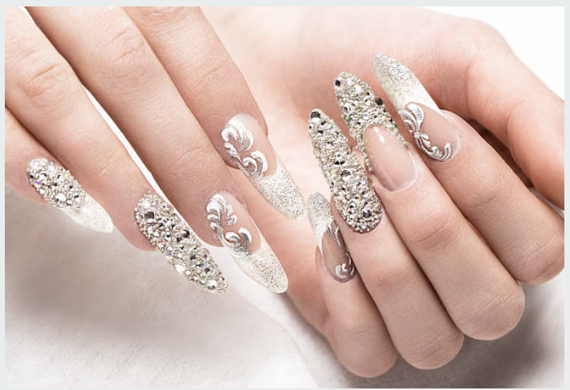

Manicure
What is a manicure?
A manicure is a beauty treatment of the hands. Your nails will be cut, filed, and shaped. You will then have your cuticles pushed back and tidied, and then enjoy a hand massage. The final step will be the painting of the nails with a colour of your choice.
Natural Nail Care
We are all familiar with the classic nail polish that comes in just about every colour you can think of. Last up to 5 days, nail polish is thinner than gel polish and can be left to dry naturally. If you want to give your nails a fresh nail polish colour, you don't need a LED lamp.

Gel Manicure
A gel manicure is a coat of colored gel that looks deceptively similar to nail polish. It's a thin brush-on formula, designed for high performance and a glossier finish than regular nail polish. When it comes to the question of "How long do gel nails last?" In fact, an OPI GelColor manicure lasts for up to 2 weeks.

Nail Enhancement
If you are someone who follows the latest trends when it comes to new nail shapes and prefer longer lengths, then acrylic nails are for you. Acrylic nails typically last between 2-3 weeks and can be ‘filled’ to help accommodate the growth of your natural nail.

| Service | Description | Price |
|---|---|---|
| Nail Polish | An affordable natural nail care experience with various nail lacquer colour your your choice | $20 |
| Gel Polish | A quick and long-lasting solution for your nail colour with various gel color of your choice | $40 |
| Acrylic Nail | Up your nail game with the latest trendy design, colour and decoration | $60 |
89898 Bell Rock Road
Sedona, AZ 92845
928-963-4455